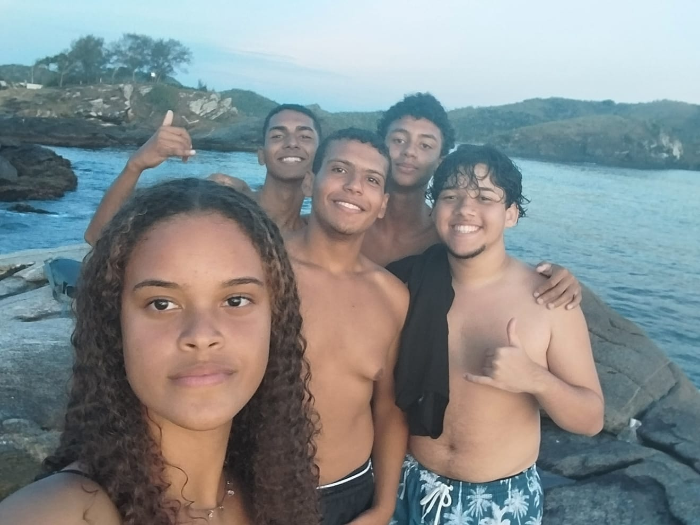
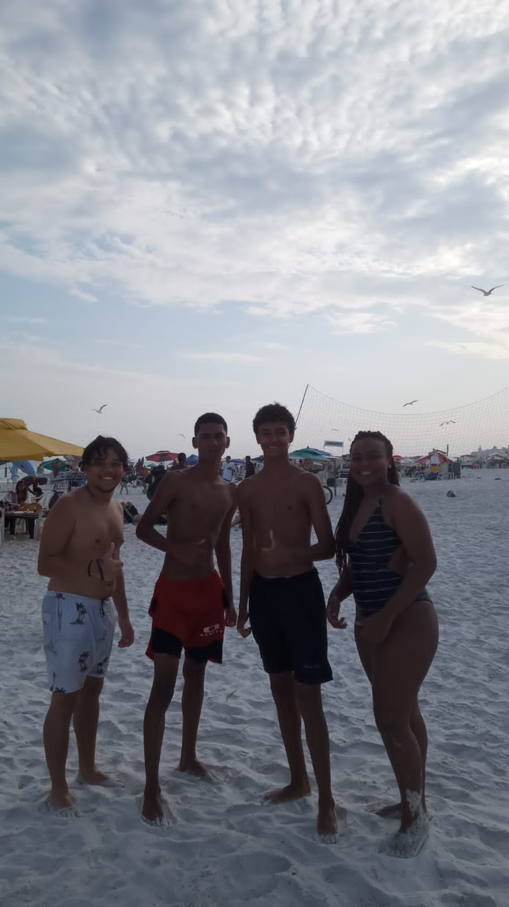
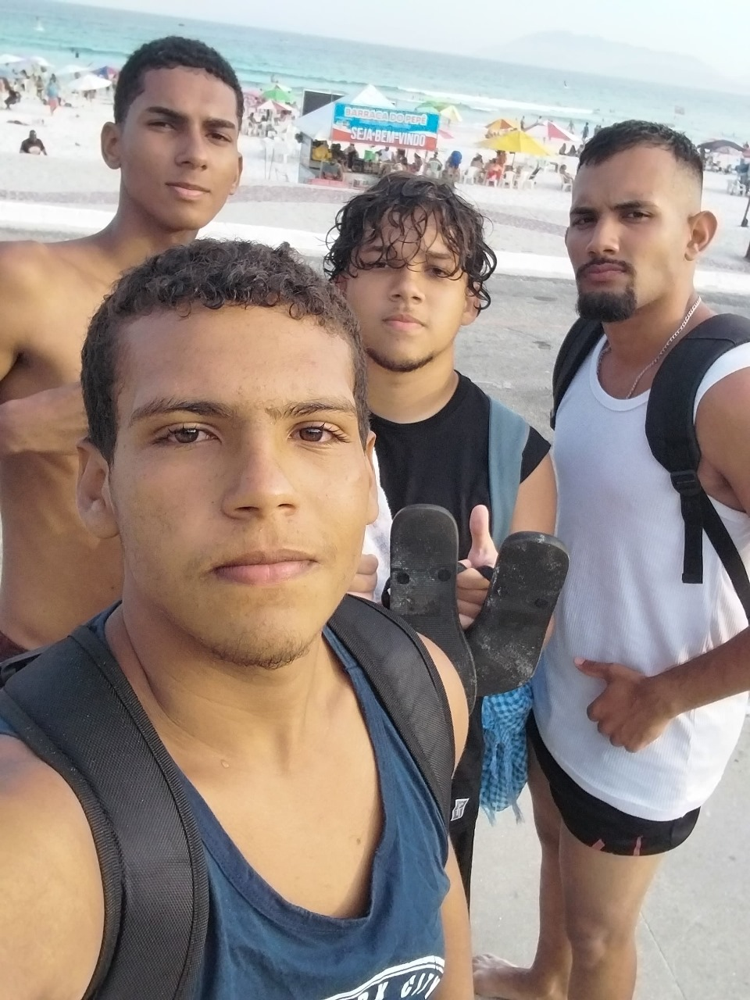

Encontro na Praia do Forte
Nada combina mais com um dia de calor do que sol, mar e boas companhias! No último final de semana, se reuniram na Praia do Forte para aproveitar o visual paradisíaco e curtir o momento. Entre risadas, mergulhos e muita resenha, o grupo mostrou que a praia é o lugar perfeito para aliviar o calor e fortalecer amizades.
Com águas cristalinas, sombra de coqueiros e um clima de descontração, o encontro foi um verdadeiro sucesso. Se refrescar com a galera em um lugar tão incrível é, sem dúvida, a receita certa para um dia perfeito! 🌊☀️
  Um Grupo de Amigos Agita São Pedro da Aldeia com Noite de Lanches
Na última noite, um grupo de amigos decidiu se reunir para dar uma descontraída na cidade de São Pedro da Aldeia. O destino foi uma das lanchonetes mais badaladas da região, onde o cardápio variado e o clima acolhedor garantiram um encontro cheio de risadas e bons momentos.
Hambúrgueres, batatas fritas e pizzas fizeram a alegria da turma, que aproveitou a noite para colocar a conversa em dia e curtir a companhia uns dos outros. “Nada como boa comida e bons amigos para fechar o dia com chave de ouro!”

Explorando a Cidade: Uma Aventura de Ônibus com os Amigos
Em um dia cheio de curiosidade e vontade de se divertir, um grupo de amigos decidiu embarcar no ônibus do Balneário em São Pedro da Aldeia apenas para explorar novos lugares e conhecer mais da cidade. Com apenas força de vontade e muita animação, descobriram cantinhos únicos que nunca tinham visitado.
A experiência mostrou que explorar sem destino certo é uma forma simples e divertida de se conectar com a cidade e criar memórias com quem se gosta.